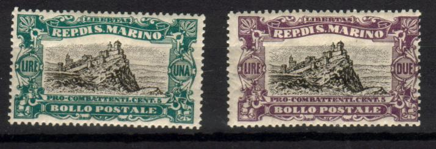
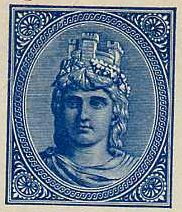

Return To Catalogue - San Marino 1877-1917 - Italy
Note: on my website many of the
pictures can not be seen! They are of course present in the
catalogue;
contact me if you want to purchase the catalogue.

Castle 2 c lilac 5 c green 10 c red 20 c orange 25 c blue 45 c brown Statue of freedom 1 L green 2 L violet 3 L red
These stamps have watermark 'Crown' and perforation 14.
Value of the stamps |
|||
vc = very common c = common * = not so common ** = uncommon |
*** = very uncommon R = rare RR = very rare RRR = extremely rare |
||
| Value | Unused | Used | Remarks |
| 2 c | c | * | |
| 5 c | c | * | |
| 10 c | c | * | |
| 20 c | * | * | |
| 25 c | * | * | |
| 45 c | * | * | |
| 1 L | *** | *** | |
| 2 L | *** | *** | |
| 3 L | *** | *** | |
Overprinted '3 Novembre 1918'
20 c orange 25 c blue 45 c brown 1 L green 2 L violet 3 L red
The overprint is different on the Lire issues.
Value of the stamps |
|||
vc = very common c = common * = not so common ** = uncommon |
*** = very uncommon R = rare RR = very rare RRR = extremely rare |
||
| Value | Unused | Used | Remarks |
| 20 c | * | * | |
| 25c | * | * | |
| 45 c | * | * | |
| 1 L | ** | ** | |
| 2 L | *** | *** | |
| 3 L | *** | *** | |
Overprinted with bars and value (1924)
30 c on 45 c brown 50 c on 1 L green 1 L on 2 L violet 2 L on 3 L red
Value of the stamps |
|||
vc = very common c = common * = not so common ** = uncommon |
*** = very uncommon R = rare RR = very rare RRR = extremely rare |
||
| Value | Unused | Used | Remarks |
| 30 c on 45 c | ** | ** | |
| 50 c on 1 L | *** | *** | |
| 1 L on 2 L | *** | *** | |
| 2 L on 3 L | *** | *** | |
30 c brown (St.Marinus sculpturing a pilar, inscription 'LABORE ET VIRTUTE') 50 c olive (view of Arbe and San Marino)
Three mountains in ellipse 5 c + 5 c olive 10 c + 5 c orange 15 c + 5 c green 25 c + 5 c red 40 c + 5 c brown 50 c + 5 c grey Head of liberty 1 L + 5 c black and blue
1 L brown
Garibaldi 30 c violet 50 c grey 60 c red Statue of woman with sword and man 1 L blue 2 L green
10 c grey and black 20 c green and black 45 c lilac and black 65 c green and black 1 L orange and black 2 L red and black Surcharged '80' on 45 c lilac and black (1938?) '80' on 65 c green and black (1938?) '1,25' on 1 L orange and black (1927) '2,50' on 2 L red and black (1927) '5' on 2 L red and black (1927)
50 c red 1.25 L blue 10 L black
Monastry 50 c red 1.25 L blue Death of Francis 2.50 L brown 5 L lilac Surcharged (1938?) 'L.2,05' on 1.25 L blue 'L.2,75' on 2.50 L brown
Castle in ellipse 5 c brown and blue 10 c grey and lilac 15 c orange and green 20 c blue and orange 25 c green and black 30 c black and orange 50 c lilac and grey 75 c red and grey Building in hexagonal 1 L brown and green 1.25 L blue and black 1.75 L green and orange 2 L grey and red 2.50 L red and blue 3 L orange and blue 3.70 L black and lilac (1935) Woman's figure 5 L lilac and green 10 L light brown and blue 15 L green and lilac 20 L blue and orange
20 c green 50 c red 1.25 L blue 1.75 L brown 2.75 L violet Overprinted 'CONVEGNO FILATELICO 28 MAGGLIO 1933' and surcharged
25 c on 2.75 L violet 50 c on 1.75 L brown 75 c on 2.75 L violet 1.25 L on 1.75 L brown Overprinted 'MOSTRA FILATELICO 12-27 APRILE 1934' and surcharged
0.25 on 1.25 L blue 0.50 on 1.75 L brown 0.75 on 50 c red L1.25 on 20 c green Surcharged (1934) 3.70 L on 1.25 L blue 3.70 L on 2.75 L violet
20 c green 50 c red 1.25 L blue 5 L brown
Proclamation of Garibaldi and portrait 10 c brown 20 c violet 25 c green 50 c brown Arrival of fleeing Garibaldi in San Marino 75 c red 1.25 L blue 2.75 L orange 5 L olive
5 c brown and black 10 c lilac and black 20 c orange and black 25 c green and black 50 c olive and black 75 c red and black 1.25 L blue and black
Portrait 5 c lilac and black 7 1/2 c brown and black 10 c grey and black 15 c red and black 20 c orange and black 25 c green and black Statue 30 c violet and black 50 c olive and black 75 c red and black 1.25 L blue and black 1.50 L brown and black 1.75 L orange and black Surcharged 20 L on 75 c red and black 100 L on 15 c red and black
25 c red Surcharged 'Cent. 60' on 25 c red (1923) 'L.1,25' and bars on 'Cent. 60' on 25 c red (1926)
Value of the stamps |
|||
vc = very common c = common * = not so common ** = uncommon |
*** = very uncommon R = rare RR = very rare RRR = extremely rare |
||
| Value | Unused | Used | Remarks |
| 25 c | *** | *** | |
| 60 c on 25 c | * | * | |
| 1.25 L on 60 c on 25 c | * | * | |
60 c red (with 5 c surcharge for the red cross)
60 c violet 'Lire 1,25' on 60 c violet (1927)
1.25 L green 2.50 L blue (with red overprint 'UNION POSTALE UNIVERSELLE')

5 c green and brown 10 c green and brown 30 c green and brown 50 c green and brown 60 c green and brown 1 L red and brown 3 L red and brown (1919) 5 L red and brown 10 L red and brown
Value of the stamps |
|||
vc = very common c = common * = not so common ** = uncommon |
*** = very uncommon R = rare RR = very rare RRR = extremely rare |
||
| Value | Unused | Used | Remarks |
| 5 c | * | * | |
| 10 c | * | * | |
| 30 c | ** | ** | |
| 50 c | ** | ** | |
| 60 c | *** | *** | |
| 1 L | *** | *** | |
| 3 L | *** | *** | |
| 5 L | RR | RR | |
| 10 L | R | R | |
The green stamps were re-issued in red in 1924 and in blue in 1925. The red stamps (Lire values) were re-issued in green in 1924 and in orange in 1925. Some additional values 2 L orange, 15 L orange, 25 L orange, 30 L orange and 50 L orange were issued in 1928. And in 1939 the values 15 c, 20 c, 25 c , 40 c (all in blue). The 5 c blue was re-issued in a slightly different design in 1939. The value was still in brown on all these stamps.

The two types of the 5 c blue and brown

Two Sperati forgeries (the cancels are genuine).

Three values were surcharged with 15 c ('C.15'), three with 20 c, three with 25 c, three with 40 c and finally three with 2 L ('L.2').
'c.10 =' on 5 c blue and brown 'c.10 =' on 5 c blue and brown (different 'c.5' on original stamp) 25 c on 30 c blue and brown 'c.50 =' on 5 c blue and brown 'c.50 =' on 5 c blue and brown (different 'c.5' on original stamp) 'Lire 1 =' on 30 c blue and brown 'Lire 1 =' on 40 c blue and brown 'Lire 1 =' on 25 L orange and brown 'Lire 2 =' on 15 L orange and brown 'Lire 3 =' on 20 c blue and brown
0,05 L green 0,10 L light brown 0,15 L red 0,20 L blue 0,25 L lilac 0,30 L red 0,40 L olive 0,50 L black 0,60 L brown 1,00 L orange 2,00 L red 5,00 L violet 10 L blue 20 L green 25 L orange 50 L brown
5 c brown (value in blue) 10 c blue (value in blue) 20 c brown (value in green) 25 c red (value in blue) 30 c blue (value in different shade of blue) 50 c orange (value in black) 60 c red (value in blue) 1 L violet (value in red) 2 L green (value in red) 3 L light brown (value in red) 4 L grey (value in red) 10 L lilac (value in red) 10 L black (value in red) 12 L red (value in red?) 15 L green (value in red?) 20 L lilac (value in red?) 50 L yellow (value in red) 300 L violet (value in brown, 1960?) 500 L brown (value in red,1960?) 1000 L (blue and brown, 1965?) Surcharged '100 ~' on 50 L yellow (original value in red)
50 c green 80 c red 1 L yellow 2 L violet 2.60 L green 3 L black 5 L olive 7.70 L brown 9 L orange 10 L blue Colours changed, overprinted 'ZEPPELIN 1933' and surcharged
3 L on 50 c orange (blue overprint) 5 L on 80 c green (blue overprint) 10 L on 1 L blue 12 L on 2 L brown (blue overprint) 15 L on 2.60 L red 20 L on 3 L green
Example of 1876:
